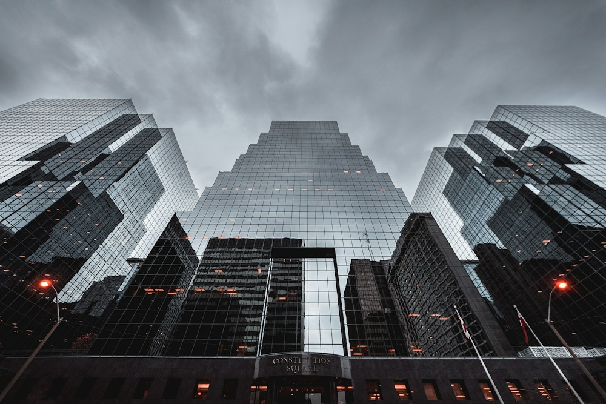

01 / SPACE↗
01 / SPACE↗THE COMMON ROOM
Making space for better ideas.
Thoughtful design for a world
that doesn’t need more ordinary.

A small collection of ideas
made with intention.
CONCEPT PROJECTS / 2026
01 / SPACE↗Making space for better ideas.

02 / FORM↗A different perspective on the everyday.
Good design doesn’t need to shout. It needs a point of view, a little personality, and a reason to exist.
Working across identity, digital, and art direction to make things that feel as good as they look. No unnecessary extras. Just the good stuff.
Let’s make something
worth looking at.
Portfolio template — replace the example email with yours.